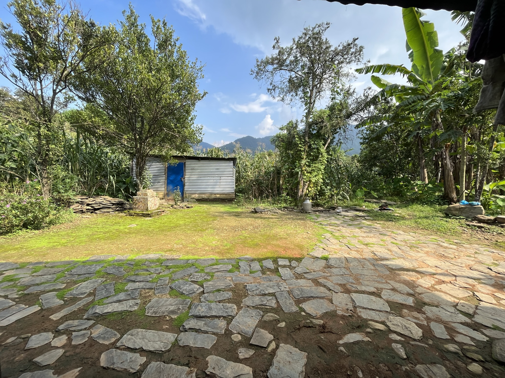

“The important thing is not to stop questioning. Curiosity has its own reason for existing.”
When money becomes expensive, cities slow their metabolism. The crane disappears from the skyline before the unemployment numbers arrive. A meditation on the spatial consequences of monetary policy — and what the built environment tells us that the data cannot.
When money becomes expensive, cities slow their metabolism. The crane disappears from the skyline before the unemployment numbers arrive. This is not metaphor — it is mechanism. The built environment is the most honest ledger of capital allocation, more honest than any earnings report, more legible than any yield curve.
Consider what happened to the American sunbelt between 2008 and 2012. Not the foreclosure statistics, which everyone watched. But the topography of incompletion — the half-finished subdivisions at the edge of Phoenix, the concrete pads in outer Las Vegas where houses were poured and then abandoned mid-frame. Capital withdrew and left its skeleton behind.
The relationship between interest rates and urban form is not linear. It is atmospheric. When rates are low for long enough, the city begins to believe in itself in a different way. Towers are proposed that would have seemed absurd a decade earlier. Neighborhoods that held their breath for thirty years suddenly exhale. The architecture of optimism has its own grammar.
What I find most interesting is not the construction cycle itself, but the latency. The lag between the moment the Federal Open Market Committee changes course and the moment that decision becomes visible in skyline. It is typically eighteen months to four years, depending on project scale and jurisdiction. The buildings we are looking at today were financed in a different interest rate world entirely.
This is what the data misses. The models track starts and completions. They do not track what was decided not to build. The vacancy that never announced itself. The architect who drew a building that will never be drawn again.
A proprietary framework for pricing residential assets in supply-constrained metros. Integrating zoning data, transit adjacency, and demographic velocity.
Introverted residential forms across Japanese, Spanish, and Moroccan traditions. Visual research and spatial analysis.
How monetary expansion maps onto urban form across long cycles.
Analog photography, architectural sketches, and found material exploring permanence and decay in the built world. Updated continuously.
